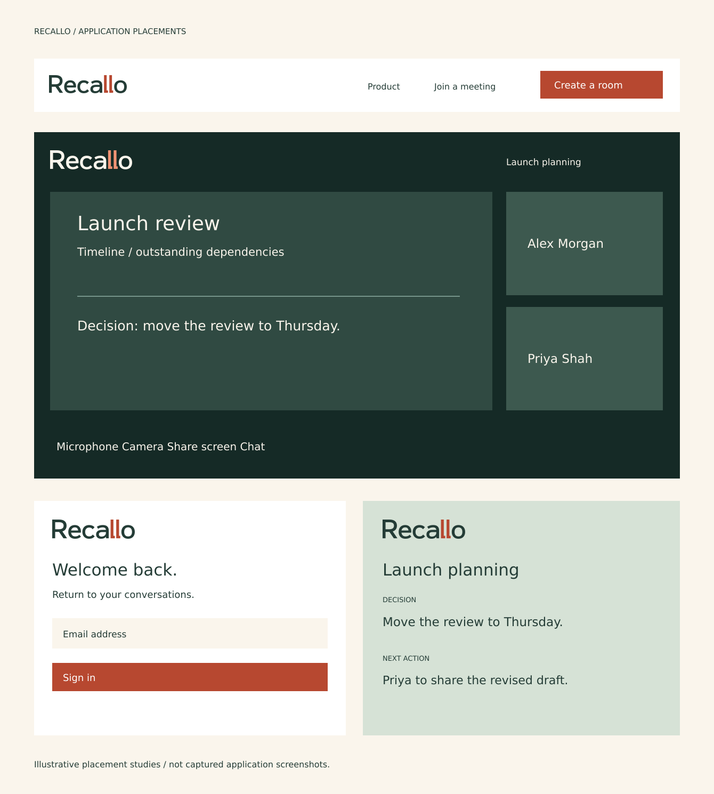
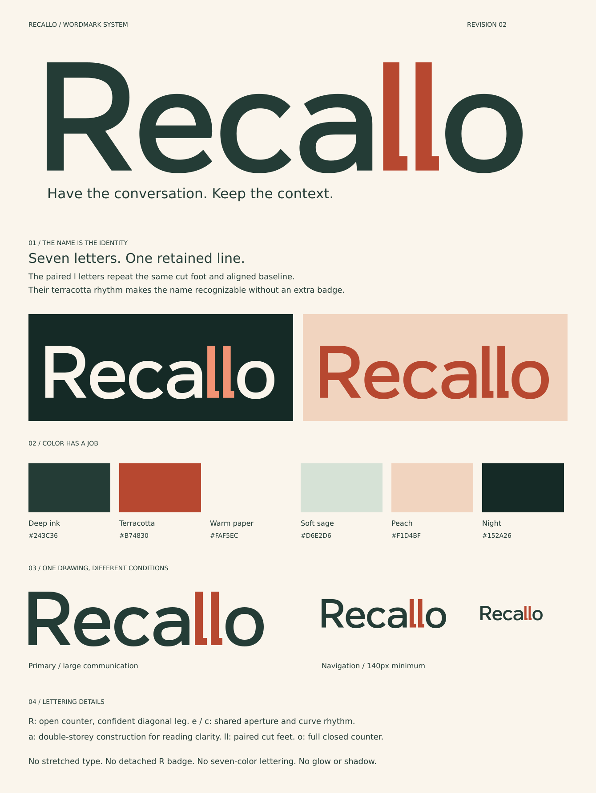

Have the conversation.
Keep the context.
The name carries the identity. Seven drawn letters, a readable double-storey a, open curves, and a pair of terracotta l letters with matching cut feet.
The accent lives inside the word. On a meeting screen, a document, or a small navigation bar, the same lettering stays intact.
A color system with defined roles.
Deep ink anchors the lettering. Terracotta identifies the repeated l forms. Paper supports reading; sage and peach provide secondary fields. Night and the lighter coral are reserved for reverse artwork.
- ink
#243C36 - paper
#FAF5EC - terracotta
#B74830 - peach
#F1D4BF - sage
#D6E2D6 - night
#152A26 - accentOnDark
#F29374
Drawn lettering
The R has a broad open counter and a direct diagonal leg. The e and c share their curve rhythm. The a has two storeys to keep the word familiar. The paired l feet echo one another without merging into a U.
Clear space and minimum size
Leave at least one stem-width around the complete name. Keep the full wordmark at least 140px wide in the interface. At smaller sizes use the extracted double-l mark; do not shrink the whole name into a favicon.
One identity across the experience.
Full-name placements for navigation, a live room, authentication and an insights document. These are illustrative placement studies, not screenshots of an integrated application.

Editable vectors. Defined usage.


Provided variants
Two-color primary and reverse artwork; black-ink, white and terracotta single-color versions; 16px and 32px compact icons; a 512px app icon; social banner; presentation and application boards; PNG previews.
Implementation contract
A shared React component uses the same outline geometry as the SVG exports. Ink inherits currentColor; the accent can be set through --recallo-logo-accent. The shared component now appears in marketing, authentication and application navigation.
This revision supersedes the five initial candidates as the proposed full-name direction. Recognition testing and trademark clearance have not been performed.
View the complete identity board
